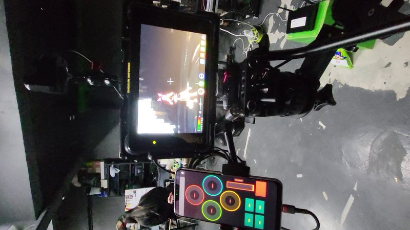
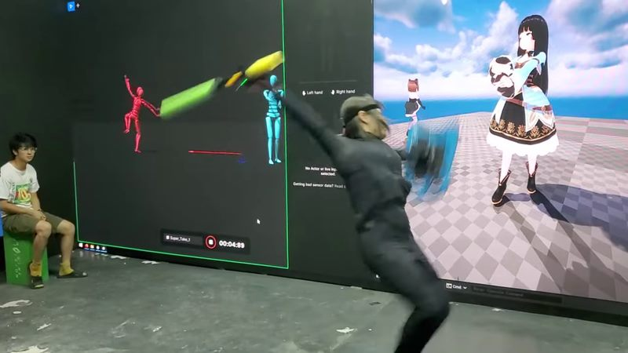
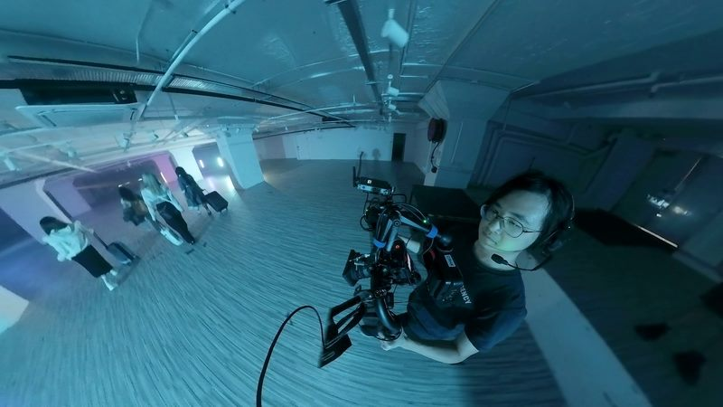
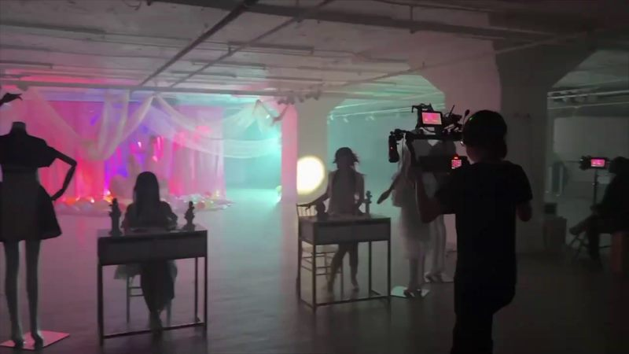
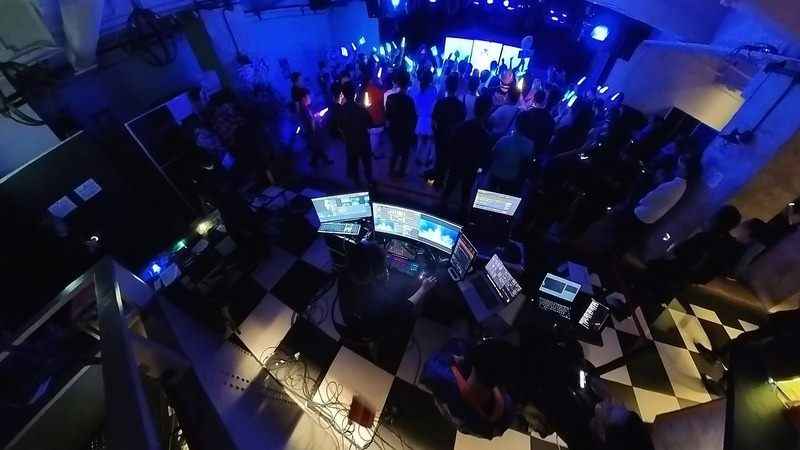
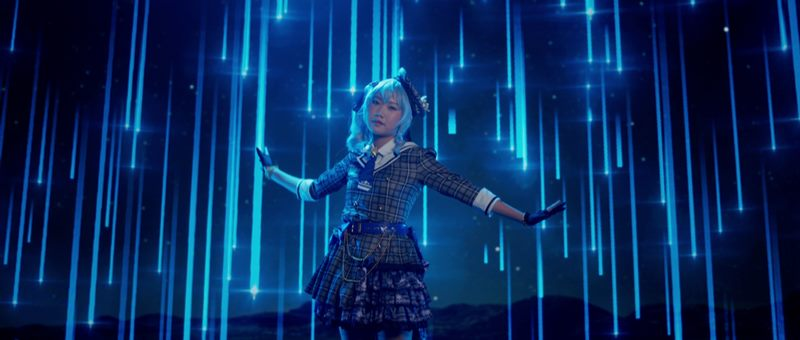
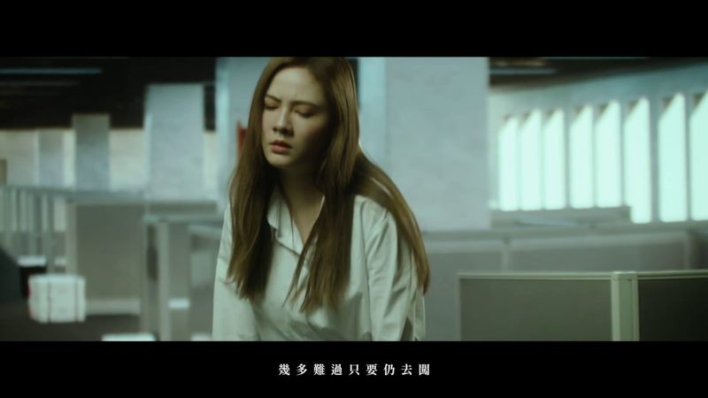

虛擬製作與 ICVFX
LED 製作棚、Unreal Engine、nDisplay、攝影機追蹤、鏡頭校正、OCIO、同步鎖相、時碼及現場操作流程。
作品集
以下整理幾類系統與影像製作案例：重點不只在畫面，也在場地、工具、操作流程和交付路徑是否可靠。
作品集中在四類製作問題：建立虛擬製作棚、運行即時表演流程、交付最終畫面，以及讓現場系統在演出壓力下保持穩定。
LED 製作棚、Unreal Engine、nDisplay、攝影機追蹤、鏡頭校正、OCIO、同步鎖相、時碼及現場操作流程。
Unreal Engine、Blackmagic Ultimatte、DeckLink、LiveLink、NDI、Spout、去背攝影機訊號及色彩顯示流程。
Rokoko、CHINGMU、AI 視覺動作捕捉、虛擬攝影機、LiveLink Face、MetaHuman 流程及多操作員演出控制。
電影攝影、攝影組、燈光、剪接、視覺特效、動態圖像、3D 動畫及最終畫面輸出。
投影映射、LED 播放、vMix、Resolume、HiRender、NDI 串流、Dante 音頻、燈光控制，以及 TouchDesigner / Unity 互動製作。
Go、C++、JavaScript、Python、C#、Linux、Docker、Proxmox、TrueNAS、自訂工具、AI 輔助流程及製作網絡。
虛擬製作
我親自建立香港早期 LED ICVFX 製作棚之一：從高解像 LED 面板選型、刷新表現測試，到實體吊掛搭建，讓場景真正可以面向攝影機使用。
基建範圍包括渲染節點、同步鎖相、製作網絡、Unreal Engine / nDisplay、硬件攝影機追蹤、鏡頭校正，以及用於控制虛擬攝影機的自訂流動應用程式。

動作捕捉與虛擬藝人
為虛擬藝人及 VTuber 製作時，我把動作捕捉資料與 Unreal Engine 即時渲染同步，令現場表演可以變成可直播的角色演出。
活動技術經驗會直接進入流程設計：媒體伺服器、NDI 串流、低延遲路由、虛擬攝影機及多操作員控制室規劃。

商業項目和音樂錄像讓我以多種角色參與，包括攝影指導、攝影助理、燈光師、剪接、視覺特效、動態圖像及 3D 動畫。

為音樂錄像及商業製作處理現場畫面、燈光判斷和攝影機操作。

以 DaVinci Resolve、Adobe After Effects、Blackmagic Fusion、Blender 及 Unreal Engine 渲染完成後期工作。
在劇組崗位、燈光安排、現場製作和技術排障之間靈活支援影像項目。
現場活動與互動系統
活動製作經驗由企業晚宴到高強度音樂節，涵蓋現場視覺、音頻工程及舞台支援。
範圍包括 Resolume Arena LED 顯示、投影映射、燈光控制台、NDI 串流、Dante 音頻，以及讓現場系統持續穩定運作的操作紀律。

教學與培訓
我為 NGO 和學校教授媒體製作課程，帶領不同年齡的學生學習剪接、DaVinci Resolve、多機廣播和影像製作技巧。
在香港城市大學，我亦曾為化學教學開發擴增實境／混合實境工具並支援學生項目。教學會迫使流程變得清楚：它必須可以解釋、可以重複，而且真正有用。
音樂錄像及表演項目，展示攝影、燈光、後期及即時系統如何共同推動最終畫面。
【平行幻想 PARALLEL PHANTASIA】 官方音樂錄像，是影像製作與後期流程作品之一。
【戀愛禁止 DOPAMINE】 官方音樂錄像，以製作劇照呈現畫面方向與後期風格。

同人音樂錄像精選，使用藍色舞台視覺語言與以表演為中心的燈光設計。

是不是這樣的痛過人才算真正的成長過，作為較安靜的表演與後期製作案例。
更完整的作品集涵蓋技術總監、攝影、活動工程、教學、系統架構及創作軟件等不同製作和教育環境。
Imagine Division、innoneer.TV、HealthMutual Group、香港城市大學、香港電競音樂節、TVB，以及場地和活動相關職務，補充了更多工作和項目背景。